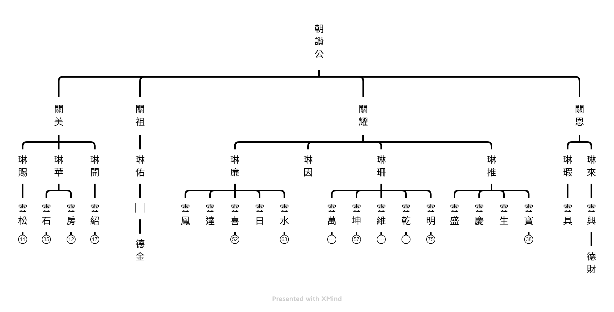

朝讚公派下遷徙史略
先祖朝讚公來台後，定居於桃園龜山，仙逝後遷葬於桃園龍潭烏樹林，關耀公派下後裔移居龍潭八張犁，關美公派下後裔移居平鎮大坑缺，關恩公、關祖公派下資料不詳，而朝讚公之祖骸後隨關耀公派下後裔建公塔於龍潭八張犁，近年因公塔之持分的子孫未辦理繼承，依法將收歸國有，經詢問政府相關單位，應先辦理繼承後成立公益法人社團，辦理信託後即不必一直辦理繼承，如今派下後裔積極進行中，目前進度如下：桃園市大陸渡台八世祖朝讚張公派下宗族會 籌設緣起
(一) 朝讚公派下祖產一覽表
A、 祖塔用地
地號：龍潭區八張犁段0300-0000地號；面積：1111,00平方公尺(共336.07坪)；地目：墓；所有權人：張蘭友持分1/4、張蘭輝持分1/4、張阿常持分1/4、張桂潤持分1/4；繼承人代表：張兆賢、張達熙、張化龍、張兆彬
B、 來台祖墓地
地號：龍潭區八張犁段0098-0000地號；面積：514平方公尺(共155.4坪)
；地目：墓；所有權人：如上祖塔用地持分人；繼承人代表：如祖塔用地繼承人
C、 祖塔前農地(祭祀公田)
地號：龍潭區八張犁段0297-0000地號；面積：2159平方公尺(共653.09坪)；地目：田；所有權人：張桂揚持分1/4、張桂根持分1/4、張桂安持分1/4 、張桂焳持分1/4；沒有法律繼承問題
(二) 朝讚公派下祖產已被政府列管
桃園縣政府於民國98年7月6日，府地籍字第0980258326號公告，全桃園縣未辦繼承的土地，自民國98年7月7日至民國113年7月6日止，15年內必須完成，否則政府收歸國有。
(2)面對祖宗產財將被政府沒收的問題，事態非常嚴重，朝讚公派下裔孫莫不積極嚴肅應對，族塔管理委員會主委張清政擔任總督導，張貴木擔任總策劃，張桂專擔任執行長，張道青擔任總幹事，為加速辦理繼承的作業，接續開過四次工作會議。
第一次工作會議：民國102年3月30日；第二次工作會議：民國102年6月22日
第三次工作會議：民國103年2月16日；第四次工作會議：民國103年7月26日
每次開會都是在龍潭里西龍路張國雄的德記油行召開，打擾很多，非常感謝，開會的目的都是為推動繼承工作，謝謝楊梅廖金美代書的專業協助，自民國102年4月起，前後30工月完成三件，平均每件耗費10個月的時間，因為朝讚公的裔孫分散全台灣各地，為了協助土地代書蓋一個章，我們(張貴木、張桂專)跑過宜蘭、屏東、台中、台南而且不止一趟，為祖先做事不能說辛苦，但勞累也應該有公道，尤其張桂專付出最多，值得禮敬。
★目前(10月15日)繼承作業已完成三件，第四件正在趕工中
被繼承人 繼承人代表 持分 完成日期 (取得土地所有權狀) 備註
張蘭友 張兆賢 1/4 民國103年1月13日 代書費新台幣5萬元
張蘭輝 張達熙 1/4 民國103年7月4日 代書費新台幣5萬元
張阿常 張化龍 1/4 民國104年10月15日 代書費新台幣10萬元
張貴潤 張兆彬 1/4 加速進行中
(三) 辦好一次繼承並非一勞永逸
民國104年4月16日代表朝讚公派下裔孫 張貴木及張桂專兩人專程到桃園市政府民政局地籍科拜訪陳純彰科長及劉紀能科員，為辦理繼承之後，是否可以依照其他有些社團，先成立宗族會，再向地方法院完成社團法人立案登記，最後再把朝讚公派下祖產一併信託給社團法人宗族會，這樣才可避免不斷辦理〃繼承〃的困惑。
(四) 籌辦〃桃園市大陸渡台八世祖朝讚張公派下宗族會〃
民國104年8月1日召開發起人暨第一次籌備會議，而且奉桃園市政府104年7月7日府社團字第1040166642號函同意籌設在案，籌備會中道過章程草案，並推張貴木、張桂揚、張紹釗、張兆華、張國雄、張桂專、張清政、張桂清、張桂拾等九人為籌備委員，並推動張貴木為籌備會主任委員、張桂專為總幹事、張兆華為會計，張道青、張桂田、張桂清三人為副總幹事。
第二次籌備會議預定104年11月下旬召開審定會員名單，確定成立大會日期及地點並擬定工作計畫及年度經費收支預算事宜。
朝讚公派下墓塔興建史略
我八世祖朝讚公渡海來台定居桃園龜山，仙逝後安葬於龜山村田莊，於民國十三年(1924)冬月遷葬龍潭烏樹林立碑為祖朝讚張公妣朱太孺人墳墓。關耀公派下琳珊公等移居龍潭鄉八張犁，奠定基業，遺下三百番土地由蘭友、蘭輝、蘭欽、蘭常等四人掌管至今。光緒年間建張公琳珊墳塋；民國三十七年(1948)夏季修建為九世祖關耀張公派下仝墓；民國四十一年十二月又創立墓前公田 (座落八張犁段玖柒地號面積零公頃貳壹公畝)土地創始人德俊、德申、蘭日、蘭輝、蘭炎、蘭秋、蘭谷、蘭材、蘭興、蘭祥、蘭錦、蘭元、桂水等，土地現由桂揚兄弟等四人接掌管理。於民國七十三年(1984)夏季由雲明公、雲乾公、雲維公、雲坤公、雲萬公、雲水公、雲喜公派下裔孫改建為八世祖朝讚張公派下佳城仝年十一月完成，吉穴坐向庚山兼酉庚申木分金，可安奉壹千餘座吉位，計畫內設天然空調室內暖和秀麗而堂皇。因祖塔出入不便，於民國七十六年(1987)一月，由蘭輝、桂揚代表購買塔後參零壹之伍地號部份土地面積柒佰壹拾壹點貳平方公尺，再於民國七十七年(1988)六月購買路地仝地號部份土地自水溝溝沿起四公尺寬、長肆拾貳公尺面積約壹佰陸拾捌平方公尺，塔後新購土地與路地均依桃園地方法院柒拾柒年度公字第參伍壹玖號公證三份其中法院存檔一份。
謹誌為永久紀念
朝讚公派下祖塔照片


朝讚公派下主系統表
